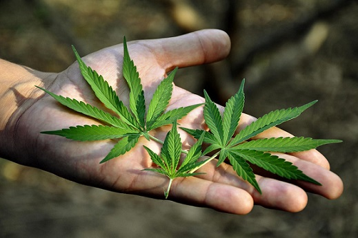

Los primeros registros del uso del cannabis se remontan alrededor del 3000 a.C. en China, donde se cultivaba para la producción de fibras y semillas comestibles. Los antiguos chinos también descubrieron las propiedades medicinales de la planta y la utilizaron en sus prácticas de medicina tradicional.
A medida que el comercio y los viajes se expandieron, el cannabis se difundió por diferentes regiones del mundo. Se ha encontrado evidencia de su uso en el antiguo Egipto, donde se han hallado rastros de cannabis en tumbas y restos arqueológicos. También hay menciones de su uso en textos médicos y religiosos de la antigua India.
Durante la Edad Media, el cannabis llegó a Europa, donde se utilizó principalmente para la producción de textiles y cuerdas. Los colonizadores europeos llevaron la planta a América del Norte y otras partes del mundo durante los siglos XVI y XVII.
A lo largo de la historia, el cannabis ha sido utilizado con diversos fines, incluyendo usos medicinales, textiles, alimentarios, recreativos y rituales. Sin embargo, su estatus legal y su percepción han variado considerablemente en diferentes épocas y culturas.
Hoy en día, el cannabis sigue siendo una planta controvertida y su uso y legalidad varían en diferentes países y regiones. Algunos lugares han legalizado su uso medicinal y/o recreativo, mientras que en otros su posesión y consumo están prohibidos o tienen restricciones.

El cannabis, también conocido como marihuana, es una planta que se ha utilizado con fines medicinales y recreativos durante siglos. El cannabis medicinal se refiere al uso de cannabis o cannabinoides, que son los compuestos activos que se encuentran en el cannabis, para el tratamiento de diversas afecciones médicas.
Los dos cannabinoides principales que se encuentran en el cannabis son el tetrahidrocannabinol (THC) y el cannabidiol (CBD). El THC es responsable de los efectos psicoactivos del cannabis, mientras que el CBD no es psicoactivo y se cree que tiene varios beneficios terapéuticos.
El cannabis medicinal se usa para aliviar los síntomas y tratar afecciones como el dolor crónico, las náuseas y los vómitos asociados con la quimioterapia, los espasmos musculares y la espasticidad en la esclerosis múltiple, y la pérdida de apetito y de peso en personas con VIH/SIDA. También ha mostrado potencial en el tratamiento de la epilepsia, la enfermedad inflamatoria intestinal y ciertos trastornos de salud mental.
Es importante tener en cuenta que el uso de cannabis medicinal varía según el país y la jurisdicción. En algunos lugares, está legalmente disponible para uso médico, mientras que en otros, aún puede ser ilegal o estar fuertemente regulado. Es crucial consultar con un profesional de la salud o un especialista que tenga conocimientos sobre el cannabis medicinal para determinar si es una opción adecuada para su condición específica y comprender los aspectos legales y regulatorios en su área.
Además, vale la pena señalar que, si bien el cannabis puede ofrecer beneficios terapéuticos potenciales, no está exento de riesgos. Los efectos secundarios pueden incluir somnolencia, mareos, deterioro de la memoria y la cognición y, en algunos casos, puede exacerbar ciertas afecciones de salud mental. La dosis, la cepa y el método de administración también pueden influir en los efectos y riesgos potenciales asociados con el consumo de cannabis.
Al igual que con cualquier tratamiento médico, es importante tener conversaciones abiertas y honestas con su proveedor de atención médica, quien puede brindarle orientación en función de sus circunstancias individuales y su historial médico.